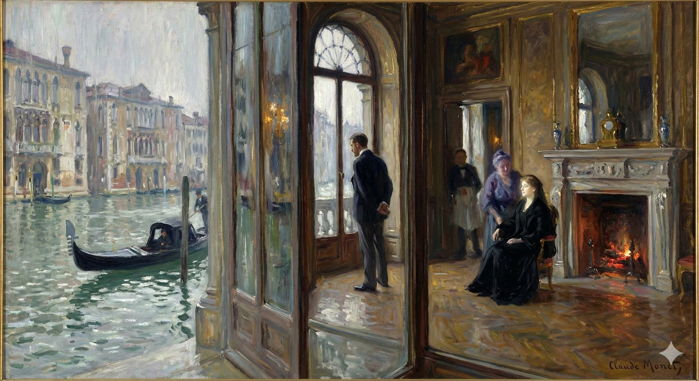

After dinner, the men have coffee and sing songs. Densher and Kate then sit together on a sofa in the drawing-room. Kate says they must be seen talking to each other to avoid suspicion. On the balcony, she tells Densher that Milly is unwell and her health looks grave.
Densher asks twice what is wrong with Milly. Kate first suggests Milly might be avoiding the party because of his presence, then says it is because Milly likes him so much. Kate explains that Milly and Mrs. Stringham have postponed their departure from town for Densher's sake. She describes Milly's great fortune and social success, but says there is now a "shadow" over her future due to a "physical break-down."
Densher asks what he can do for Milly. Kate tells him he can console her for everything she might lose. She says she is "using" him, as he is what she has of most precious, to make things pleasant for Milly. Densher asks about the nature of the illness. Kate says it is not a lung condition, but believes that if Milly is ill, she is very ill. She reveals that Milly is seeing a prominent doctor, Sir Luke Strett. She tells Densher to do as she says and "make up to a sick girl."
Lord Mark arrives and Kate introduces him to Densher. Lord Mark asks after Milly. After he leaves to join the others on the balcony, Densher asks Kate if Lord Mark is her aunt's choice for her, and she says yes. They discuss Lord Mark's social standing and his effect on people.
Densher praises Kate and tells her not to fail him. She reassures him about her plan involving Milly, stating that she has told Milly everything and provided perfectly suitable reasons for her past actions. She tells him to do as he likes and not to worry.
As Mrs. Stringham is leaving, Kate tells Densher he must go. She then goes to speak with Lord Mark in a corner. Aunt Maud detains Densher and tells him not to neglect Milly. Densher says Kate has been telling him the same thing. Aunt Maud says that she and Kate will follow Milly abroad, and that Densher will be invited to visit. She tells him not to miss the opportunity of Milly's fortune. Aunt Maud then says she has done what was necessary to "start" him, revealing, "I've told the proper lie for you."
After leaving the house, Densher walks and realizes what she meant: Aunt Maud has told Milly, through Mrs. Stringham, that Kate does not care for him and that his attachment to Kate is one-sided.
Based on the text, this is a concise character study:
They came to it almost immediately; he was to wonder afterwards at the fewness of their steps. "She has turned her face to the wall."
They found it almost right away; he would later be surprised by how few steps they'd taken. "She's facing the wall."
"You mean she's worse?"
"So, is she doing even worse?"
The poor lady stood there as she had stopped; Densher had, in the instant flare of his eagerness, his curiosity, all responsive at sight of her, waved away, on the spot, the padrona, who had offered to relieve her of her mackintosh. She looked vaguely about through her wet veil, intensely alive now to the step she had taken and wishing it not to have been in the dark, but clearly, as yet, seeing nothing. "I don't know how she is—and it's why I've come to you."
The poor woman stood still. In the sudden burst of his excitement and curiosity at seeing her, Densher had immediately waved away the housekeeper who had offered to take her raincoat. She looked around vaguely, her wet veil making it difficult to see, now acutely aware of the decision she'd made to come, wishing she hadn't come in the dark, but clearly not seeing anything yet. "I don't know how she is – and that's why I've come to you."
"I'm glad enough you've come," he said, "and it's quite—you make me feel—as if I had been wretchedly waiting for you."
"I'm really glad you're here," he said, "and honestly, you make me feel like I've been miserable, just waiting for you."
She showed him again her blurred eyes—she had caught at his word. "Have you been wretched?"
She looked at him again, her eyes unfocused – she'd latched onto what he said. "Have you been miserable?"
Now, however, on his lips, the word expired. It would have sounded for him like a complaint, and before something he already made out in his visitor he knew his own trouble as small. Hers, under her damp draperies, which shamed his lack of a fire, was great, and he felt she had brought it all with her. He answered that he had been patient and above all that he had been still. "As still as a mouse—you'll have seen it for yourself. Stiller, for three days together, than I've ever been in my life. It has seemed to me the only thing."
But now, the word died on his lips. It would have sounded like a whine, and he sensed something in her presence that made his own problems seem insignificant. Hers, hinted at by her wet clothes, which made him feel ashamed of his cold house, were enormous, and he knew she was carrying them with her. He replied that he'd been enduring things, and most importantly, he'd been silent. "As quiet as a mouse—you’ll have noticed. More still, for three whole days, than I've ever been before. It seemed the only way."
This qualification of it as a policy or a remedy was straightway for his friend, he saw, a light that her own light could answer. "It has been best. I've wondered for you. But it has been best," she said again.
Calling this a policy or a solution immediately made sense to him, he realized, as something his friend's perspective could illuminate. "It was the right choice. I'm glad for you. But it was the right choice," she repeated.
"Yet it has done no good?"
But has it helped at all?
"I don't know. I've been afraid you were gone." Then as he gave a headshake which, though slow, was deeply mature: "You won't go?"
"I don't know. I was worried you'd left."
He slowly shook his head, looking very serious. "You're not going anywhere, are you?"
"Is to 'go,'" he asked, "to be still?"
"Is 'to leave,'" he asked, "the same as 'to stay'?"
"Oh I mean if you'll stay for me."
Oh, I mean, if you'll stay for me.
"I'll do anything for you. Isn't it for you alone now I can?"
I'd do anything for you. Isn't that what I'm here for?
She thought of it, and he could see even more of the relief she was taking from him. His presence, his face, his voice, the old rooms themselves, so meagre yet so charged, where Kate had admirably been to him—these things counted for her, now she had them, as the help she had been wanting: so that she still only stood there taking them all in. With it however popped up characteristically a throb of her conscience. What she thus tasted was almost a personal joy. It told Densher of the three days she on her side had spent. "Well, anything you do for me—is for her too. Only, only—!"
She thought about it, and he could tell how much comfort she was getting from him. His presence, his appearance, his voice, even the old, simple rooms, which held so much meaning, where Kate had always been so good to him—these things were important to her now that she had them, like the support she’d been longing for. She just stood there, taking it all in. But then, as usual, a pang of guilt flickered across her. What she felt then was almost pure happiness. It reminded Densher of the three days she'd spent on her own. "Well, anything you do for me... is also for her. Only, only—!"
"Only nothing now matters?"
Does nothing matter anymore?
She looked at him a minute as if he were the fact itself that he expressed. "Then you know?"
She stared at him for a moment, as though he was the very embodiment of what he was saying. "So, you know?"
"Is she dying?" he asked for all answer.
"Is she going to die?" he asked instead of replying.
Mrs. Stringham waited—her face seemed to sound him. Then her own reply was strange. "She hasn't so much as named you. We haven't spoken."
Mrs. Stringham waited, as if she was trying to figure him out just by looking at him. Then, her response was odd. "She hasn't even mentioned you. We haven't talked about you."
"Not for three days?"
"You're not going for three days?"
"No more," she simply went on, "than if it were all over. Not even by the faintest allusion."
"It's finished," she just continued, "just like it's done. There's not even a hint of it anymore."
"Oh," said Densher with more light, "you mean you haven't spoken about me?"
"Oh," Densher said, understanding better, "you mean you haven't mentioned me?"
"About what else? No more than if you were dead."
What else is there to say? It's like you're already gone.
"Well," he answered after a moment, "I am dead."
"Well," he said after a pause, "I'm dead."
"Then I am," said Susan Shepherd with a drop of her arms on her waterproof.
"Then I'm done," said Susan Shepherd, letting her arms fall to her raincoat.
It was a tone that, for the minute, imposed itself in its dry despair; it represented, in the bleak place, which had no life of its own, none but the life Kate had left—the sense of which, for that matter, by mystic channels, might fairly be reaching the visitor—the very impotence of their extinction. And Densher had nothing to oppose it withal, nothing but again: "Is she dying?"
It was a voice that, for a moment, was overwhelmingly sad; it expressed, in that empty, lifeless room (except for the life Kate had lost – a feeling that, somehow, might even be reaching the visitor), the complete helplessness of their situation. And Densher had nothing to counter it with, nothing except to ask again: "Is she dying?"
It made her, however, as if these were crudities, almost material pangs, only say as before: "Then you know?"
It affected her, as if those were insensitive remarks, almost like physical pain, to only repeat, as she had before: "So you know?"
"Yes," he at last returned, "I know. But the marvel to me is that you do. I've no right in fact to imagine or to assume that you do."
"Yes," he finally said, "I understand. But what amazes me is that you do. Honestly, I shouldn't even expect or think that you would."
"You may," said Susan Shepherd, "all the same. I know."
"You can," said Susan Shepherd, "regardless.
I know."
"Everything?"
"What's up?"
Her eyes, through her veil, kept pressing him. "No—not everything. That's why I've come."
She kept looking at him intently through her veil. "No, not everything. That's why I'm here."
"That I shall really tell you?" With which, as she hesitated and it affected him, he brought out in a groan a doubting "Oh, oh!" It turned him from her to the place itself, which was a part of what was in him, was the abode, the worn shrine more than ever, of the fact in possession, the fact, now a thick association, for which he had hired it. That was not for telling, but Susan Shepherd was, none the less, so decidedly wonderful that the sense of it might really have begun, by an effect already operating, to be a part of her knowledge. He saw, and it stirred him, that she hadn't come to judge him; had come rather, so far as she might dare, to pity. This showed him her own abasement—that, at any rate, of grief; and made him feel with a rush of friendliness that he liked to be with her. The rush had quickened when she met his groan with an attenuation.
"Can I actually tell you this?" As she paused and it affected him, he groaned in doubt, "Oh, oh!" It turned him away from her and toward the place itself, which was a part of him, more than ever the dwelling, the worn-down sanctuary, of the truth he possessed, the truth, now a powerful memory, for which he had rented it. That wasn't something he could say, but Susan Shepherd was, nonetheless, so incredibly wonderful that the feeling of it might actually have started, through an effect that was already happening, to become a part of her understanding. He saw, and it moved him, that she hadn't come to judge him; she had come, as far as she was able, to show pity. This revealed her own humility—at least, her grief—and made him feel, with a surge of affection, that he enjoyed being with her. That feeling intensified when she responded to his groan with a softened voice.
"We shall at all events—if that's anything—be together."
We'll definitely be together, no matter what.
It was his own good impulse in herself. "It's what I've ventured to feel. It's much." She replied in effect, silently, that it was whatever he liked; on which, so far as he had been afraid for anything, he knew his fear had dropped. The comfort was huge, for it gave back to him something precious, over which, in the effort of recovery, his own hand had too imperfectly closed. Kate, he remembered, had said to him, with her sole and single boldness—and also on grounds he hadn't then measured—that Mrs. Stringham was a person who wouldn't, at a pinch, in a stretch of confidence, wince. It was but another of the cases in which Kate was always showing. "You don't think then very horridly of me?"
It was her own good nature, her inner kindness. "That's what I've dared to hope. It means a lot." She answered without speaking, that it meant whatever he wanted it to mean; and with that, any fear he'd had vanished. The relief was enormous, because it returned something valuable to him, something he hadn't quite managed to hold onto himself while trying to get better. He remembered Kate telling him, with her usual, straightforward boldness—and based on things he hadn't fully understood at the time—that Mrs. Stringham was someone who, even when pushed, wouldn't lose her nerve. It was another example of Kate always being perceptive. "So, you don't think I'm awful, then?"
And her answer was the more valuable that it came without nervous effusion—quite as if she understood what he might conceivably have believed. She turned over in fact what she thought, and that was what helped him. "Oh you've been extraordinary!"
And her response was even more helpful because she didn't ramble nervously. It was like she understood what he probably thought. She actually considered what she believed, and that's what helped him. "Oh, you've been amazing!"
It made him aware the next moment of how they had been planted there. She took off her cloak with his aid, though when she had also, accepting a seat, removed her veil, he recognised in her personal ravage that the words she had just uttered to him were the one flower she had to throw. They were all her consolation for him, and the consolation even still depended on the event. She sat with him at any rate in the grey clearance, as sad as a winter dawn, made by their meeting. The image she again evoked for him loomed in it but the larger. "She has turned her face to the wall."
He immediately realized how they'd ended up there. She took off her cloak with his help. Then, sitting down and removing her veil, he saw the pain in her face. He understood that the words she'd just spoken to him were the only gesture of affection she had left. They were all she had to offer him, and even that was dependent on what happened. She sat with him in the dim, grey space, as melancholy as a winter sunrise, created by their meeting. The memory she conjured for him felt even more significant there. "She's given up," he thought.
He saw with the last vividness, and it was as if, in their silences, they were simply so leaving what he saw. "She doesn't speak at all? I don't mean not of me."
He saw everything clearly, and it felt like their silences were just them letting go of what he was seeing. "She doesn't talk at all? I don't mean just to me."
"Of nothing—of no one." And she went on, Susan Shepherd, giving it out as she had had to take it. "She doesn't want to die. Think of her age. Think of her goodness. Think of her beauty. Think of all she is. Think of all she has. She lies there stiffening herself and clinging to it all. So I thank God—!" the poor lady wound up with a wan inconsequence.
"Of nothing—of no one." Susan Shepherd continued, repeating what she'd been told to accept. "She doesn't want to die. Consider her age. Consider how kind she is. Consider her beauty. Think about everything she is, everything she has. She's lying there, stiffening, clinging to it all. So I'm grateful—!" the poor woman finished with a weak, anticlimactic statement.
He wondered. "You thank God—?"
He wondered, "You're thanking God—?"
"That she's so quiet."
She's really quiet.
He continued to wonder. "Is she so quiet?"
He kept wondering. "Why is she so quiet?"
"She's more than quiet. She's grim. It's what she has never been. So you see—all these days. I can't tell you—but it's better so. It would kill me if she were to tell me."
She's not just quiet. She's seriously upset. This is something she's never been like before. So, considering everything that's happened... I can't explain it, but it's better this way. It would destroy me if she told me what was wrong.
"To tell you?" He was still at a loss.
"You want me to tell you?" He was still confused.
"How she feels. How she clings. How she doesn't want it."
How she feels. How she holds on. How she doesn't want this to happen.
"How she doesn't want to die? Of course she doesn't want it." He had a long pause, and they might have been thinking together of what they could even now do to prevent it. This, however, was not what he brought out. Milly's "grimness" and the great hushed palace were present to him; present with the little woman before him as she must have been waiting there and listening. "Only, what harm have you done her?"
"Why wouldn't she want to live? Of course, she doesn't." He paused for a long time, and they probably both considered what they could do *right now* to stop it. But that's not what he said. He was thinking of Milly's pain and the overwhelming silence of that big, empty house. He pictured them both there, the little woman in front of him, as if she was waiting and listening. Then he asked, "But what did *you* do to hurt her?"
Mrs. Stringham looked about in her darkness. "I don't know. I come and talk of her here with you."
Mrs. Stringham looked around in the dark. "I don't know. I come here to talk about her with you."
It made him again hesitate. "Does she utterly hate me?"
It made him hesitate again. "Does she completely hate me?"
"I don't know. How can I? No one ever will."
I have no idea. How could I? Nobody ever will.
"She'll never tell?"
Is she going to tell?
"She'll never tell."
She'll never reveal the secret.
Once more he thought. "She must be magnificent."
He thought again. "She must be amazing."
"She is magnificent."
She's amazing.
His friend, after all, helped him, and he turned it, so far as he could, all over. "Would she see me again?"
His friend helped him, and he examined the situation thoroughly. "Would she see me again?"
It made his companion stare. "Should you like to see her?"
It made his friend stare. "Would you like to see her?"
"You mean as you describe her?" He felt her surprise, and it took him some time. "No."
"You mean like how you're describing her?" He sensed her surprise and needed a moment. "No."
"Ah then!" Mrs. Stringham sighed.
"Oh, well," Mrs. Stringham sighed.
"But if she could bear it I'd do anything."
But if she could handle it, I'd do whatever it takes.
She had for the moment her vision of this, but it collapsed. "I don't see what you can do."
She pictured it for a moment, but then it fell apart. "I don't see how you can help."
"I don't either. But she might."
Me neither. But maybe she does.
Mrs. Stringham continued to think. "It's too late."
Mrs. Stringham kept thinking. "It's too late."
"Too late for her to see—?"
Too late for her to realize...?
"Too late."
It's too late.
The very decision of her despair—it was after all so lucid—kindled in him a heat. "But the doctor, all the while—?"
Her very despair, which was, after all, so clear, excited him. "But the doctor, though...?"
"Tacchini? Oh he's kind. He comes. He's proud of having been approved and coached by a great London man. He hardly in fact goes away; so that I scarce know what becomes of his other patients. He thinks her, justly enough, a great personage; he treats her like royalty; he's waiting on events. But she has barely consented to see him, and, though she has told him, generously—for she thinks of me, dear creature—that he may come, that he may stay, for my sake, he spends most of his time only hovering at her door, prowling through the rooms, trying to entertain me, in that ghastly saloon, with the gossip of Venice, and meeting me, in doorways, in the sala, on the staircase, with an agreeable intolerable smile. We don't," said Susan Shepherd, "talk of her."
Tacchini? He's a nice guy. He's here all the time. He's really pleased to have been mentored and trained by a famous doctor in London. He practically never leaves, so I'm not sure what happens to his other patients. He thinks she's a very important person, and rightly so. He treats her like she's royalty and is just waiting to see what happens. But she barely lets him see her, and even though she's told him—and she's being generous because she thinks of me—that he can come and stay for my sake, he mostly just hangs around her door. He wanders through the rooms and tries to distract me with gossip about Venice in that awful living room. He keeps popping up in doorways, in the main room, on the stairs, always with that annoying, fake smile. We," said Susan Shepherd, "don't talk about her."
"By her request?"
"Did she ask you to do this?"
"Absolutely. I don't do what she doesn't wish. We talk of the price of provisions."
"Definitely. I only do what she wants.
We're discussing the cost of food."
"By her request too?"
Did she ask for that too?
"Absolutely. She named it to me as a subject when she said, the first time, that if it would be any comfort to me he might stay as much as we liked."
Yes. She mentioned it to me, the first time she said that he could stay with us as long as we wanted, if it would make me feel better.
Densher took it all in. "But he isn't any comfort to you!"
Densher looked at everything. "But he doesn't make you feel better!"
"None whatever. That, however," she added, "isn't his fault. Nothing's any comfort."
Not at all. But that," she continued, "isn't his fault. Nothing helps."
"Certainly," Densher observed, "as I but too horribly feel, I'm not."
"Absolutely," Densher said, "I know all too well that's not the case."
"No. But I didn't come for that."
No, but that's not why I'm here.
"You came for me."
You came for me.
"Well then call it that." But she looked at him a moment with eyes filled full, and something came up in her the next instant from deeper still. "I came at bottom of course—"
"Okay, let's go with that." But she looked at him, her eyes brimming with emotion, and in the next moment, something even deeper surfaced within her. "I came, ultimately, of course—"
"You came at bottom of course for our friend herself. But if it's, as you say, too late for me to do anything?"
You obviously came here for our friend. But if, as you claim, it's too late for me to help?
She continued to look at him, and with an irritation, which he saw grow in her, from the truth itself. "So I did say. But, with you here"—and she turned her vision again strangely about her—"with you here, and with everything, I feel we mustn't abandon her."
She kept looking at him, and he could see her annoyance growing, stemming from the truth of the situation. "Yes, I did say that. But, with you here"—and she glanced around strangely—"with you here, and with everything else, I feel we can't abandon her."
"God forbid we should abandon her."
We absolutely shouldn't abandon her.
"Then you won't?" His tone had made her flush again.
"So, you're not going to?" His voice made her blush again.
"How do you mean I 'won't,' if she abandons me? What can I do if she won't see me?"
What do you mean I *won't* be okay if she leaves me?
What am I supposed to do if she refuses to see me?
"But you said just now you wouldn't like it."
But you just said you wouldn't want to do that.
"I said I shouldn't like it in the light of what you tell me. I shouldn't like it only to see her as you make me. I should like it if I could help her. But even then," Densher pursued without faith, "she would have to want it first herself. And there," he continued to make out, "is the devil of it. She won't want it herself. She can't!"
"I told you I wouldn't enjoy it, considering what you've told me. I wouldn't enjoy it just seeing her the way you've described. I would enjoy it if I could help her. But even then," Densher continued, sounding doubtful, "she'd have to want it herself first. And that," he continued, trying to figure things out, "is the problem. She won't want it. She can't!"
He had got up in his impatience of it, and she watched him while he helplessly moved. "There's one thing you can do. There's only that, and even for that there are difficulties. But there is that." He stood before her with his hands in his pockets, and he had soon enough, from her eyes, seen what was coming. She paused as if waiting for his leave to utter it, and as he only let her wait they heard in the silence, on the Canal, the renewed downpour of rain. She had at last to speak, but, as if still with her fear, she only half-spoke. "I think you really know yourself what it is."
He'd gotten up, impatient. She watched him move around helplessly. "There's one thing you can do. It's the only thing, and even that's hard. But it's there." He stood in front of her with his hands in his pockets, and he quickly understood from her expression what was coming. She hesitated, as if waiting for his permission to say it, and since he didn't interrupt, they heard the rain starting up again on the canal in the silence. Finally, she had to speak, but, still seeming afraid, she only said it partially. "I think you already know what it is."
He did know what it was, and with it even, as she said—rather!—there were difficulties. He turned away on them, on everything, for a moment; he moved to the other window and looked at the sheeted channel, wider, like a river, where the houses opposite, blurred and belittled, stood at twice their distance. Mrs. Stringham said nothing, was as mute in fact, for the minute, as if she had "had" him, and he was the first again to speak. When he did so, however, it was not in straight answer to her last remark—he only started from that. He said, as he came back to her, "Let me, you know, see—one must understand," almost as if he had for the time accepted it. And what he wished to understand was where, on the essence of the question, was the voice of Sir Luke Strett. If they talked of not giving her up shouldn't he be the one least of all to do it? "Aren't we, at the worst, in the dark without him?"
He knew what was going on, and as she pointed out—yes, absolutely!—there were problems. He briefly ignored them, everything, and walked to the other window. He looked at the water, which was like a river, and the houses across the way, which looked blurry and far away. Mrs. Stringham didn't say anything, she was silent, as if she'd finally gotten through to him. He was the first to speak again. But he didn't directly answer her last comment; he just used it as a starting point. He came back to her and said, "Let me think—we have to figure this out," as if he had accepted it for now.
What he wanted to figure out was where Sir Luke Strett stood on the matter. If they were talking about not giving her up, shouldn't he be the last person to do it? "At the very least, aren't we lost without his help?"
"Oh," said Mrs. Stringham, "it's he who has kept me going. I wired the first night, and he answered like an angel. He'll come like one. Only he can't arrive, at the nearest, till Thursday afternoon."
"Oh," said Mrs. Stringham, "He's the reason I'm still doing okay. I sent him a telegram that first night, and his response was amazing. He'll be here to help, just like a savior. But the earliest he can get here is Thursday afternoon."
"Well then that's something."
Okay, that's interesting.
She considered. "Something—yes. She likes him."
She thought about it. "Something...yes. She's attracted to him."
"Rather! I can see it still, the face with which, when he was here in October—that night when she was in white, when she had people there and those musicians—she committed him to my care. It was beautiful for both of us—she put us in relation. She asked me, for the time, to take him about; I did so, and we quite hit it off. That proved," Densher said with a quick sad smile, "that she liked him."
"Yes, absolutely! I still picture it, the way she looked. That night in October, when she wore white, and had guests and the musicians. That's when she asked me to look after him. It was wonderful for both of us—she connected us. She asked me to keep him company for a while; I did, and we got along really well. That showed," Densher said with a sudden, sad smile, "that she was fond of him."
"He liked you," Susan Shepherd presently risked.
"He liked you," Susan Shepherd finally ventured.
"Ah I know nothing about that."
I don't know anything about that.
"You ought to then. He went with you to galleries and churches; you saved his time for him, showed him the choicest things, and you perhaps will remember telling me myself that if he hadn't been a great surgeon he might really have been a great judge. I mean of the beautiful."
You should have. He went with you to art galleries and churches. You helped him out, showed him the best stuff, and I think you even told me that if he hadn't been a top surgeon, he could have been a brilliant critic. He had a great eye, you know, for beauty.
"Well," the young man admitted, "that's what he is—in having judged her. He hasn't," he went on, "judged her for nothing. His interest in her—which we must make the most of—can only be supremely beneficent."
"Well," the young man conceded, "that's how he is – he's judged her. He didn't," he continued, "judge her for no reason. His interest in her – which we need to use to our advantage – can only be a good thing."
He still roamed, while he spoke, with his hands in his pockets, and she saw him, on this, as her eyes sufficiently betrayed, trying to keep his distance from the recognition he had a few moments before partly confessed to. "I'm glad," she dropped, "you like him!"
He was still pacing as he spoke, his hands in his pockets, and she noticed him, as her eyes clearly showed, trying to avoid acknowledging the feeling he'd admitted to a few minutes earlier. "I'm glad," she said, "that you like him!"
There was something for him in the sound of it. "Well, I do no more, dear lady, than you do yourself. Surely you like him. Surely, when he was here, we all liked him."
He found something meaningful in the way she spoke.
"Well, I'm just doing the same as you, dear.
You must like him, surely. We all liked him when he was here."
"Yes, but I seem to feel I know what he thinks. And I should think, with all the time you spent with him, you'd know it," she said, "yourself."
"Yeah, but I kind of feel like I know what he's thinking.
And you should too, considering how much time you spent with
him," she said, "you know?"
Densher stopped short, though at first without a word. "We never spoke of her. Neither of us mentioned her, even to sound her name, and nothing whatever in connexion with her passed between us."
Densher stopped abruptly, but didn't say anything at first. "We never talked about her. Neither of us brought her up, not even to say her name, and we never discussed anything related to her."
Mrs. Stringham stared up at him, surprised at this picture. But she had plainly an idea that after an instant resisted it. "That was his professional propriety."
Mrs. Stringham looked up at him, surprised by the image. But she clearly had a thought that she immediately dismissed. "That was just him being proper in a professional way."
"Precisely. But it was also my sense of that virtue in him, and it was something more besides." And he spoke with sudden intensity. "I couldn't talk to him about her!"
Exactly. But it was also my belief in his integrity, and there was something more to it than that." He said this with sudden passion. "I couldn't discuss her with him!"
"Oh!" said Susan Shepherd.
"Oh!" said Susan.
"I can't talk to any one about her."
I can't talk to anyone about her.
"Except to me," his friend continued.
"Except for me," his friend continued.
"Except to you." The ghost of her smile, a gleam of significance, had waited on her words, and it kept him, for honesty, looking at her. For honesty too—that is for his own words—he had quickly coloured: he was sinking so, at a stroke, the burden of his discourse with Kate. His visitor, for the minute, while their eyes met, might have been watching him hold it down. And he had to hold it down—the effort of which, precisely, made him red. He couldn't let it come up; at least not yet. She might make what she would of it. He attempted to repeat his statement, but he really modified it. "Sir Luke, at all events, had nothing to tell me, and I had nothing to tell him. Make-believe talk was impossible for us, and—"
"Except for you." A hint of a smile, full of meaning, had lingered on her words, and he found himself staring at her, being honest. Being honest with himself, too – about what he was about to say – he blushed quickly. He was getting overwhelmed, feeling the full weight of his conversation with Kate. For that moment, while their eyes met, she might have thought he was struggling to contain something. And he had to – the effort of it was precisely what made him turn red. He couldn't let it out, at least not yet. She could interpret it however she wanted. He tried to repeat what he'd said, but he actually changed it. "Sir Luke, in any case, didn't have anything to tell me, and I didn't have anything to tell him. We couldn't have a fake conversation, and—"
"And real"—she had taken him right up with a huge emphasis—"was more impossible still." No doubt—he didn't deny it; and she had straightway drawn her conclusion. "Then that proves what I say—that there were immensities between you. Otherwise you'd have chattered."
"And the truth," she said with great force, "was even more impossible." He didn't disagree, of course. And she immediately drew her conclusion. "Then that proves my point – that there was a huge gap between you. Otherwise, you would have talked more."
"I dare say," Densher granted, "we were both thinking of her."
"I imagine," Densher agreed, "we were both thinking about her."
"You were neither of you thinking of any one else. That's why you kept together."
You were both completely self-absorbed. That's why you stayed together.
Well, that too, if she desired, he took from her; but he came straight back to what he had originally said. "I haven't a notion, all the same, of what he thinks." She faced him, visibly, with the question into which he had already observed that her special shade of earnestness was perpetually flowering, right and left—"Are you very sure?"—and he could only note her apparent difference from himself. "You, I judge, believe that he thinks she's gone."
He took that from her too, if that's what she wanted. But then he went right back to what he'd said before. "I still don't know what he's thinking." She turned to him, the question he always saw her asking – that particular intense look she always had – blooming on her face, "Are you *really* sure?" And he just noticed again how different she was from him. "You, I guess, you think he believes she's left."
She took it, but she bore up. "It doesn't matter what I believe."
She took it, but she held strong. "It doesn't matter
what I think."
"Well, we shall see"—and he felt almost basely superficial. More and more, for the last five minutes, had he known she had brought something with her, and never in respect to anything had he had such a wish to postpone. He would have liked to put everything off till Thursday; he was sorry it was now Tuesday; he wondered if he were afraid. Yet it wasn't of Sir Luke, who was coming; nor of Milly, who was dying; nor of Mrs. Stringham, who was sitting there. It wasn't, strange to say, of Kate either, for Kate's presence affected him suddenly as having swooned or trembled away. Susan Shepherd's, thus prolonged, had cast on it some influence under which it had ceased to act. She was as absent to his sensibility as she had constantly been, since her departure, absent, as an echo or a reference, from the palace; and it was the first time, among the objects now surrounding him, that his sensibility so noted her. He knew soon enough that it was of himself he was afraid, and that even, if he didn't take care, he should infallibly be more so. "Meanwhile," he added for his companion, "it has been everything for me to see you." She slowly rose at the words, which might almost have conveyed to her the hint of his taking care. She stood there as if she had in fact seen him abruptly moved to dismiss her. But the abruptness would have been in this case so marked as fairly to offer ground for insistence to her imagination of his state. It would take her moreover, she clearly showed him she was thinking, but a minute or two to insist. Besides, she had already said it. "Will you do it if he asks you? I mean if Sir Luke himself puts it to you. And will you give him"—oh she was earnest now!—"the opportunity to put it to you?"
"Well, we'll see," he said, and felt incredibly shallow. He'd known for the past five minutes that she had something to tell him, and he'd never wanted to put something off so badly. He wished he could delay everything until Thursday; he regretted that it was only Tuesday. He wondered if he was scared. But it wasn't of Sir Luke, who was coming; nor of Milly, who was dying; nor of Mrs. Stringham, who was there. Strangely, it wasn't even of Kate, whose presence seemed to have faded away. Susan Shepherd's prolonged absence had created a detachment, removing her influence. She was as absent from his feelings as she had been since leaving, like an echo or a memory of the palace. And it was the first time, surrounded by those present, that he noticed her absence so acutely. He soon realized he was afraid of himself, and that if he wasn't careful, he'd be even more so. "In the meantime," he added for her, "it's been wonderful to see you."
She slowly stood up at his words, which might have sounded like a suggestion for her to leave. She stood there as if he'd abruptly dismissed her. But the abruptness would have been so obvious that she might have used it to understand his emotional state. Moreover, she was clearly thinking that it would only take her a minute or two to insist on staying. Besides, she had already asked him: "Will you do it if he asks you? I mean, if Sir Luke himself asks you. And will you give him"—oh, she was serious now!—"the chance to ask you?"
"The opportunity to put what?"
"The chance to do what?"
"That if you deny it to her, that may still do something."
Even if you refuse her, it might still have an effect.
Densher felt himself—as had already once befallen him in the quarter of an hour—turn red to the top of his forehead. Turning red had, however, for him, as a sign of shame, been, so to speak, discounted: his consciousness of it at the present moment was rather as a sign of his fear. It showed him sharply enough of what he was afraid. "If I deny what to her?"
Densher felt a wave of heat wash over him, turning him red from his hairline to his forehead, just as it had happened once before in a flash. He'd almost gotten used to blushing as a sign of embarrassment, but this time it was different. He realized it was a sign of his fear. It showed him exactly what he was afraid of. "If I deny what… to her?"
Hesitation, on the demand, revived in her, for hadn't he all along been letting her see that he knew? "Why, what Lord Mark told her."
She hesitated, then the question brought her back to reality. After all, hadn't he always been subtly implying that he knew? "Why, what Lord Mark told her."
"And what did Lord Mark tell her?"
"So, what did Lord Mark say to her?"
Mrs. Stringham had a look of bewilderment—of seeing him as suddenly perverse. "I've been judging that you yourself know." And it was she who now blushed deep.
Mrs. Stringham looked completely confused, as if she suddenly saw him as acting contrary to his nature. "I assumed you already knew," she said, and then she blushed deeply.
It quickened his pity for her, but he was beset too by other things. "Then you know—"
It made him feel sorry for her, but he was also preoccupied with other matters. "So you know—"
"Of his dreadful visit?" She stared. "Why it's what has done it."
"Of his awful visit?" She stared. "That's what caused it."
"Yes—I understand that. But you also know—"
Yes, I get that. But you also know—
He had faltered again, but all she knew she now wanted to say. "I'm speaking," she said soothingly, "of what he told her. It's that that I've taken you as knowing."
He hesitated again, but she was finally ready to say everything she wanted. "I'm talking," she said calmly, "about what he told her. That's what I assumed you knew."
"Oh!" he sounded in spite of himself.
"Oh!" he blurted out.
It appeared to have for her, he saw the next moment, the quality of relief, as if he had supposed her thinking of something else. Thereupon, straightway, that lightened it. "Oh you thought I've known it for true!"
He saw the relief on her face the next moment, as if she'd been preoccupied with something else. Then, suddenly, she seemed lighter. "Oh, you thought I already knew the truth!"
Her light had heightened her flush, and he saw that he had betrayed himself. Not, however, that it mattered, as he immediately saw still better. There it was now, all of it at last, and this at least there was no postponing. They were left with her idea—the one she was wishing to make him recognise. He had expressed ten minutes before his need to understand, and she was acting after all but on that. Only what he was to understand was no small matter; it might be larger even than as yet appeared.
The way the light hit her made her blush more noticeably, and he realized he'd given himself away. But it didn't really matter, because he quickly understood something even bigger. It was all there now, finally, and there was no way to avoid it. They were left with her point – the one she wanted him to grasp. He'd said, just ten minutes earlier, that he needed to understand, and she was responding directly to that. However, what he needed to understand was a serious thing; it might be even more significant than he currently realized.
He took again one of his turns, not meeting what she had last said; he mooned a minute, as he would have called it, at a window; and of course she could see that she had driven him to the wall. She did clearly, without delay, see it; on which her sense of having "caught" him became as promptly a scruple, which she spoke as if not to press. "What I mean is that he told her you've been all the while engaged to Miss Croy."
He changed the subject again, ignoring what she'd just said. He stared out the window for a moment, lost in thought. She could tell she'd cornered him. She realized this immediately, and her satisfaction at "trapping" him quickly turned into a feeling of doubt, which she voiced cautiously, as if not wanting to push him too hard. "What I'm saying is that he told her you've been secretly engaged to Miss Croy the whole time."
He gave a jerk round; it was almost—to hear it—the touch of a lash; and he said—idiotically, as he afterwards knew—the first thing that came into his head. "All what while?"
He spun around suddenly; it sounded almost like a whip cracking. Then he blurted out the first thing that popped into his head, which he realized later was really stupid: "What's going on?"
"Oh it's not I who say it." She spoke in gentleness. "I only repeat to you what he told her."
"Oh, I'm not the one saying this," she said softly. "I'm just telling you what he told her."
Densher, from whom an impatience had escaped, had already caught himself up. "Pardon my brutality. Of course I know what you're talking about. I saw him, toward the evening," he further explained, "in the Piazza; only just saw him—through the glass at Florian's—without any words. In fact I scarcely know him—there wouldn't have been occasion. It was but once, moreover—he must have gone that night. But I knew he wouldn't have come for nothing, and I turned it over—what he would have come for."
Densher, who had let a moment of irritation slip out, quickly corrected himself. "I'm sorry to be so blunt. Of course I understand what you mean. I saw him, late in the afternoon," he continued, "in the Piazza; I just caught a glimpse of him—through the window at Florian's—without speaking to him. Actually, I barely know him—I haven't really had the chance. It was only that one time, and he must have left that night. But I figured he wouldn't have come for no reason, and I was wondering—what he would have been here for."
Oh so had Mrs. Stringham. "He came for exasperation."
Oh, Mrs. Stringham knew it too. "He came to be a pain."
Densher approved. "He came to let her know that he knows better than she for whom it was she had a couple of months before, in her fool's paradise, refused him."
Densher agreed. "He came to tell her that he understands the situation better than she does, the situation where she, in her naive optimism, turned him down a couple of months ago."
"How you do know!"—and Mrs. Stringham almost smiled.
"You know how!"—and Mrs. Stringham almost smiled.
"I know that—but I don't know the good it does him."
I get that, but I don't see how it helps him.
"The good, he thinks, if he has patience—not too much—may be to come. He doesn't know what he has done to her. Only we, you see, do that."
He thinks things might get better, if he can just be patient—but not *too* patient. He has no idea what he's done to her. Only we know that.
He saw, but he wondered. "She kept from him—what she felt?"
He saw her, but he was puzzled. "What was she hiding from him—how she felt?"
"She was able—I'm sure of it—not to show anything. He dealt her his blow, and she took it without a sign." Mrs. Stringham, it was plain, spoke by book, and it brought into play again her appreciation of what she related. "She's magnificent."
She managed—I'm certain of it—to hide her feelings.
He hurt her, and she didn't react at all. Mrs. Stringham, it was obvious, was just repeating what she'd learned, and it made her enjoy the story even more. "She's amazing."
Densher again gravely assented. "Magnificent!"
Densher nodded seriously. "Wonderful!"
"And he," she went on, "is an idiot of idiots."
And she continued, "He's a complete moron."
"An idiot of idiots." For a moment, on it all, on the stupid doom in it, they looked at each other. "Yet he's thought so awfully clever."
Complete and utter moron. They stared at each other for a second, thinking about the whole stupid mess. "And he thinks he's so smart."
"So awfully—it's Maud Lowder's own view. And he was nice, in London," said Mrs. Stringham, "to me. One could almost pity him—he has had such a good conscience."
"That's just Maud Lowder's opinion, really.
And he was nice to me in London," Mrs. Stringham said,
"You could almost feel sorry for him – he's always been so principled."
"That's exactly the inevitable ass."
That's exactly what's going to happen.
"Yes, but it wasn't—I could see from the only few things she first told me—that he meant her the least harm. He intended none whatever."
Yes, but I could tell from the little she initially told me that he didn't mean to hurt her at all. He had no bad intentions.
"That's always the ass at his worst," Densher returned. "He only of course meant harm to me."
"That's just typical of him," Densher replied. "He just wants to hurt me, of course."
"And good to himself—he thought that would come. He had been unable to swallow," Mrs. Stringham pursued, "what had happened on his other visit. He had been then too sharply humiliated."
He thought things would eventually work out for him. Mrs. Stringham continued, "He couldn't accept what had happened during his previous visit. He'd been too deeply embarrassed then."
"Oh I saw that."
Yeah, I saw that.
"Yes, and he also saw you. He saw you received, as it were, while he was turned away."
Yes, and he saw you too. He saw you get something, basically, while he wasn't looking.
"Perfectly," Densher said—"I've filled it out. And also that he has known meanwhile for what I was then received. For a stay of all these weeks. He had had it to think of."
"Okay," Densher said. "I've completed the form.
And also, he's known all along what I was getting paid for.
For the duration of these weeks. He's had time to consider it."
"Precisely—it was more than he could bear. But he has it," said Mrs. Stringham, "to think of still."
Exactly – it was too much for him. But he still has it, Mrs. Stringham said, to think about.
"Only, after all," asked Densher, who himself somehow, at this point, was having more to think of even than he had yet had—"only, after all, how has he happened to know? That is, to know enough."
"So, the thing is," Densher asked, since he was starting to have a lot on his mind, even more than before, "how did he find out? I mean, how did he know so much?"
"What do you call enough?" Mrs. Stringham enquired.
"How much is enough?" Mrs. Stringham asked.
"He can only have acted—it would have been his sole safety—from full knowledge."
He must have acted – it was his only way to stay safe – based on complete information.
He had gone on without heeding her question; but, face to face as they were, something had none the less passed between them. It was this that, after an instant, made her again interrogative. "What do you mean by full knowledge?"
He'd kept going without answering her, but even though they were right in front of each other, something had still happened between them. That's why, a moment later, she asked again. "What do you mean by 'knowing everything'?"
Densher met it indirectly. "Where has he been since October?"
Densher asked indirectly, "Where's he been since October?"
"I think he has been back to England. He came in fact, I've reason to believe, straight from there."
I think he's been back to England. Actually, I have reason to believe he came directly from there.
"Straight to do this job? All the way for his half-hour?"
Is this job straightforward? Will it take him the whole half hour?
"Well, to try again—with the help perhaps of a new fact. To make himself possibly right with her—a different attempt from the other. He had at any rate something to tell her, and he didn't know his opportunity would reduce itself to half an hour. Or perhaps indeed half an hour would be just what was most effective. It has been!" said Susan Shepherd.
Okay, let me try this again, maybe with a new piece of information. He wanted to make things right with her, a different approach than before. He had something to say, and he didn't realize he'd only have half an hour to do it. Or, actually, maybe half an hour would be the perfect amount of time! "It worked!" Susan Shepherd said.
Her companion took it in, understanding but too well; yet as she lighted the matter for him more, really, than his own courage had quite dared—putting the absent dots on several i's—he saw new questions swarm. They had been till now in a bunch, entangled and confused; and they fell apart, each showing for itself. The first he put to her was at any rate abrupt. "Have you heard of late from Mrs. Lowder."
Her companion understood perfectly. However, as she explained things more clearly than he had dared to admit to himself, filling in all the details, new questions popped up. Up until now, they had all been jumbled together and confusing, but now they separated, each standing alone. The first question he asked her was, at least, direct. "Have you heard from Mrs. Lowder recently?"
"Oh yes, two or three times. She depends naturally upon news of Milly."
"Yeah, a couple of times. She's definitely waiting to hear how Milly is doing."
He hesitated. "And does she depend, naturally, upon news of me?"
He paused. "And I guess, does she need to hear from me?"
His friend matched for an instant his deliberation.
His friend paused, considering the situation for a moment, just like he was.
"I've given her none that hasn't been decently good. This will have been the first."
I've only given her things that were really good. This will be the first time I haven't.
"'This'?" Densher was thinking.
"What's this?" Densher was thinking.
"Lord Mark's having been here, and her being as she is."
Now that Lord Mark has been here, and considering how she is.
He thought a moment longer. "What has Mrs. Lowder written about him? Has she written that he has been with them?"
He thought about it for a bit longer. "What did Mrs. Lowder write about him? Did she say he's been with them?"
"She has mentioned him but once—it was in her letter before the last. Then she said something."
She's only mentioned him once, and that was in her letter before the last one. Then she said something about him.
"And what did she say?"
"So, what did she say?"
Mrs. Stringham produced it with an effort. "Well it was in reference to Miss Croy. That she thought Kate was thinking of him. Or perhaps I should say rather that he was thinking of her—only it seemed this time to have struck Maud that he was seeing the way more open to him."
Mrs. Stringham forced the information out. "Well, it was about Miss Croy. She thought Kate was interested in him. Or maybe I should say it was more that he was interested in her—but this time Maud seemed to think he saw a better chance with her."
Densher listened with his eyes on the ground, but he presently raised them to speak, and there was that in his face which proved him aware of a queerness in his question. "Does she mean he has been encouraged to propose to her niece?"
Densher listened, looking at the floor. Then he looked up to speak, and his expression showed he realized his question was odd. "Does she mean he was pushed to propose to her niece?"
"I don't know what she means."
I don't understand her.
"Of course not"—he recovered himself; "and I oughtn't to seem to trouble you to piece together what I can't piece myself. Only I 'guess,'" he added, "I can piece it."
"Of course not," he said, regaining his composure. "And I shouldn't bother you trying to figure out something I can't figure out myself. But I think," he added, "I can do it."
She spoke a little timidly, but she risked it. "I dare say I can piece it too."
She spoke a little shyly, but she took a chance. "I bet I can fix it too."
It was one of the things in her—and his conscious face took it from her as such—that from the moment of her coming in had seemed to mark for him, as to what concerned him, the long jump of her perception. They had parted four days earlier with many things, between them, deep down. But these things were now on their troubled surface, and it wasn't he who had brought them so quickly up. Women were wonderful—at least this one was. But so, not less, was Milly, was Aunt Maud; so, most of all, was his very Kate. Well, he already knew what he had been feeling about the circle of petticoats. They were all such petticoats! It was just the fineness of his tangle. The sense of that, in its turn, for us too, might have been not unconnected with his putting to his visitor a question that quite passed over her remark. "Has Miss Croy meanwhile written to our friend?"
It was something about her – and he understood this as he looked at her – that had struck him from the moment she walked in. It seemed to represent a significant leap in her understanding of things, as far as he was concerned. They’d separated four days before, and they had a lot of unspoken issues between them. But now, those issues were out in the open, and he hadn't been the one to bring them up so quickly. Women were amazing - or at least this one was. But so was Milly, and so was Aunt Maud. And most of all, so was his own Kate. He already knew how he felt about the collection of women around him. They were all like that: it was a matter of how cleverly he was navigating them. This idea, in a way, may have been linked to the fact that he then asked his visitor a question that completely ignored what she had just said. "Has Miss Croy written to our mutual friend yet?"
"Oh," Mrs. Stringham amended, "her friend also. But not a single word that I know of."
"Oh," Mrs. Stringham added, "her friend too.
But not a word, as far as I know."
He had taken it for certain she hadn't—the thing being after all but a shade more strange than his having himself, with Milly, never for six weeks mentioned the young lady in question. It was for that matter but a shade more strange than Milly's not having mentioned her. In spite of which, and however inconsequently, he blushed anew for Kate's silence. He got away from it in fact as quickly as possible, and the furthest he could get was by reverting for a minute to the man they had been judging. "How did he manage to get at her? She had only—with what had passed between them before—to say she couldn't see him."
He'd assumed she hadn't known about it—that whole situation was only a little stranger than the fact that he and Milly hadn't spoken about the other woman for six weeks. And actually, it was only a little stranger than Milly's own silence on the matter. Despite all of that, and it didn't really make sense, he felt embarrassed all over again by Kate's lack of a word. He tried to avoid thinking about it, and the furthest he could get was by briefly turning his thoughts to the man they'd been talking about. "How did he get to her? All she had to do, considering what had happened between them before, was say she wouldn't see him."
"Oh she was disposed to kindness. She was easier," the good lady explained with a slight embarrassment, "than at the other time."
Oh, she was in a good mood. She was more agreeable, the nice woman explained, a little awkwardly, "than before."
"Easier?"
Is that easier?
"She was off her guard. There was a difference."
She wasn't paying attention. Something was off.
"Yes. But exactly not the difference."
Yes. But that's not the point.
"Exactly not the difference of her having to be harsh. Perfectly. She could afford to be the opposite." With which, as he said nothing, she just impatiently completed her sense. "She had had you here for six weeks."
It wasn't that she needed to be mean. Not at all. She could have been completely different. Since he didn't respond, she just impatiently finished her thought. "She's kept you here for six weeks."
"Oh!" Densher softly groaned.
"Oh!" Densher groaned softly.
"Besides, I think he must have written her first—written I mean in a tone to smooth his way. That it would be a kindness to himself. Then on the spot—"
Also, I think he probably wrote to her first, trying to soften her up. You know, to make things easier for himself. Then, right away—
"On the spot," Densher broke in, "he unmasked? The horrid little beast!"
"Right then," Densher interrupted, "he took off his disguise?
The awful little creep!"
It made Susan Shepherd turn slightly pale, though quickening, as for hope, the intensity of her look at him. "Oh he went off without an alarm."
Susan Shepherd's face went a little pale, but her gaze at him became more intense, as if she were hopeful. "Oh, he left without saying anything."
"And he must have gone off also without a hope."
And he must have left with no hope at all.
"Ah that, certainly."
Okay, sure.
"Then it was mere base revenge. Hasn't he known her, into the bargain," the young man asked—"didn't he, weeks before, see her, judge her, feel her, as having for such a suit as his not more perhaps than a few months to live?"
Then it was just petty revenge. "Didn't he know her, too?" the young man asked. "Didn't he see her, assess her, and feel her weeks earlier, and realize she probably only had a few months left to live, making his suit for her even more questionable?"
Mrs. Stringham at first, for reply, but looked at him in silence; and it gave more force to what she then remarkably added. "He has doubtless been aware of what you speak of, just as you have yourself been aware."
Mrs. Stringham initially didn't say anything, but just looked at him. That made what she said next even more striking. "He's probably known about this for just as long as you have."
"He has wanted her, you mean, just because—?"
You're saying he wanted her just because...?
"Just because," said Susan Shepherd.
"Just because," said Susan Shepherd.
"The hound!" Merton Densher brought out. He moved off, however, with a hot face, as soon as he had spoken, conscious again of an intention in his visitor's reserve. Dusk was now deeper, and after he had once more taken counsel of the dreariness without he turned to his companion. "Shall we have lights—a lamp or the candles?"
"The dog!" Merton Densher exclaimed. But he quickly turned away, embarrassed, aware again of a purpose behind his visitor's silence. It was getting darker. After he'd taken another look at how bleak things seemed outside, he addressed his companion. "Should we turn on some lights—a lamp or the candles?"
"Not for me."
I'm not interested.
"Nothing?"
"Is that all?"
"Not for me."
I'm not interested.
He waited at the window another moment and then faced his friend with a thought. "He will have proposed to Miss Croy. That's what has happened."
He waited at the window a little longer and then
turned to his friend with an idea. "He probably proposed
to Miss Croy. That's what must have happened."
Her reserve continued. "It's you who must judge."
She remained composed. "You're the one who needs to decide."
"Well, I do judge. Mrs. Lowder will have done so too—only she, poor lady, wrong. Miss Croy's refusal of him will have struck him"—Densher continued to make it out—"as a phenomenon requiring a reason."
Okay, here's the translation:
"Well, I am judging. Mrs. Lowder will have judged as well – only she'll be wrong, poor woman. Miss Croy's rejection of him will have seemed to him"—Densher continued to try and understand—"as something extraordinary that needs an explanation."
"And you've been clear to him as the reason?"
And did you tell him why?
"Not too clear—since I'm sticking here and since that has been a fact to make his descent on Miss Theale relevant. But clear enough. He has believed," said Densher bravely, "that I may have been a reason at Lancaster Gate, and yet at the same time have been up to something in Venice."
It's not entirely certain – since I'm staying here and since that's been a key factor in his interest in Miss Theale. But it's clear enough. He's believed," Densher said bravely, "that I might have had some involvement at Lancaster Gate, but also that I was involved in something else in Venice."
Mrs. Stringham took her courage from his own. "'Up to' something? Up to what?"
Mrs. Stringham took her cue from him.
"Planning something? What are you planning?"
"God knows. To some 'game,' as they say. To some deviltry. To some duplicity."
Who knows? Some people see it as a game, as they say. Others see it as wickedness. Still others see it as deception.
"Which of course," Mrs. Stringham observed, "is a monstrous supposition." Her companion, after a stiff minute—sensibly long for each—fell away from her again, and then added to it another minute, which he spent once more looking out with his hands in his pockets. This was no answer, he perfectly knew, to what she had dropped, and it even seemed to state for his own ears that no answer was possible. She left him to himself, and he was glad she had declined, for their further colloquy, the advantage of lights. These would have been an advantage mainly to herself. Yet she got her benefit too even from the absence of them. It came out in her very tone when at last she addressed him—so differently, for confidence—in words she had already used. "If Sir Luke himself asks it of you as something you can do for him, will you deny to Milly herself what she has been made so dreadfully to believe?"
"That's a ridiculous idea," Mrs. Stringham declared. Her companion, after a very awkward pause – each second felt like an eternity – moved away from her again, then added another minute, during which he just stared out the window with his hands in his pockets. He knew perfectly well that was no response to her question, and it seemed to suggest to himself that there was no possible answer. She left him to his thoughts, and he was relieved she hadn’t insisted on turning on the lights. They would have benefited her more than him. But she still got something out of the darkness. It came through in her voice when she finally spoke to him, with a different, more confident tone, using words she’d already said. "If Sir Luke personally asks you to do something for him, will you deny Milly what she has been made to believe so desperately?"
Oh how he knew he hung back! But at last he said: "You're absolutely certain then that she does believe it?"
He clearly hesitated! But finally, he asked, "So, you're completely sure she actually believes it?"
"Certain?" She appealed to their whole situation. "Judge!"
"Are you sure?" She challenged the entire group.
"Decide!"
He took his time again to judge. "Do you believe it?"
He paused again to consider. "Do you believe it?"
He was conscious that his own appeal pressed her hard; it eased him a little that her answer must be a pain to her discretion. She answered none the less, and he was truly the harder pressed. "What I believe will inevitably depend more or less on your action. You can perfectly settle it—if you care. I promise to believe you down to the ground if, to save her life, you consent to a denial."
He knew he was putting pressure on her, and it made him feel slightly better that her response would be difficult. Despite this, she answered, and it actually put *him* in a more difficult position. "What I believe will depend entirely on what you do. You can completely control it – if you want to. I swear I'll believe you completely if you deny everything to save her."
"But a denial, when it comes to that—confound the whole thing, don't you see!—of exactly what?"
But a denial, when it comes down to it – and it ruins everything, you know! – a denial of *what* exactly?
It was as if he were hoping she would narrow; but in fact she enlarged. "Of everything."
He seemed to be waiting for her to become more focused; but actually, she broadened her scope. "Everything," she said.
Everything had never even yet seemed to him so incalculably much. "Oh!" he simply moaned into the gloom.
He'd never felt so overwhelmed. "Oh!" he simply groaned in the darkness.